Exploratory Data Analysis MIBI
Last updated: 2021-10-22
Checks: 6 1
Knit directory: mibi_analysis/
This reproducible R Markdown analysis was created with workflowr (version 1.6.2). The Checks tab describes the reproducibility checks that were applied when the results were created. The Past versions tab lists the development history.
Great! Since the R Markdown file has been committed to the Git repository, you know the exact version of the code that produced these results.
Great job! The global environment was empty. Objects defined in the global environment can affect the analysis in your R Markdown file in unknown ways. For reproduciblity it’s best to always run the code in an empty environment.
The command set.seed(20211011) was run prior to running the code in the R Markdown file. Setting a seed ensures that any results that rely on randomness, e.g. subsampling or permutations, are reproducible.
Great job! Recording the operating system, R version, and package versions is critical for reproducibility.
Nice! There were no cached chunks for this analysis, so you can be confident that you successfully produced the results during this run.
Using absolute paths to the files within your workflowr project makes it difficult for you and others to run your code on a different machine. Change the absolute path(s) below to the suggested relative path(s) to make your code more reproducible.
| absolute | relative |
|---|---|
| ~/Saez/workflowr_projects/mibi_analysis/ | . |
Great! You are using Git for version control. Tracking code development and connecting the code version to the results is critical for reproducibility.
The results in this page were generated with repository version 7fd2c36. See the Past versions tab to see a history of the changes made to the R Markdown and HTML files.
Note that you need to be careful to ensure that all relevant files for the analysis have been committed to Git prior to generating the results (you can use wflow_publish or wflow_git_commit). workflowr only checks the R Markdown file, but you know if there are other scripts or data files that it depends on. Below is the status of the Git repository when the results were generated:
Ignored files:
Ignored: analysis/cell.specific.results/immune.immune_s1/
Ignored: analysis/cell.specific.results/immune.immune_s10/
Ignored: analysis/cell.specific.results/immune.immune_s11/
Ignored: analysis/cell.specific.results/immune.immune_s12/
Ignored: analysis/cell.specific.results/immune.immune_s13/
Ignored: analysis/cell.specific.results/immune.immune_s14/
Ignored: analysis/cell.specific.results/immune.immune_s15/
Ignored: analysis/cell.specific.results/immune.immune_s16/
Ignored: analysis/cell.specific.results/immune.immune_s17/
Ignored: analysis/cell.specific.results/immune.immune_s18/
Ignored: analysis/cell.specific.results/immune.immune_s19/
Ignored: analysis/cell.specific.results/immune.immune_s2/
Ignored: analysis/cell.specific.results/immune.immune_s20/
Ignored: analysis/cell.specific.results/immune.immune_s21/
Ignored: analysis/cell.specific.results/immune.immune_s22/
Ignored: analysis/cell.specific.results/immune.immune_s23/
Ignored: analysis/cell.specific.results/immune.immune_s24/
Ignored: analysis/cell.specific.results/immune.immune_s25/
Ignored: analysis/cell.specific.results/immune.immune_s26/
Ignored: analysis/cell.specific.results/immune.immune_s27/
Ignored: analysis/cell.specific.results/immune.immune_s28/
Ignored: analysis/cell.specific.results/immune.immune_s29/
Ignored: analysis/cell.specific.results/immune.immune_s3/
Ignored: analysis/cell.specific.results/immune.immune_s31/
Ignored: analysis/cell.specific.results/immune.immune_s32/
Ignored: analysis/cell.specific.results/immune.immune_s33/
Ignored: analysis/cell.specific.results/immune.immune_s34/
Ignored: analysis/cell.specific.results/immune.immune_s35/
Ignored: analysis/cell.specific.results/immune.immune_s36/
Ignored: analysis/cell.specific.results/immune.immune_s37/
Ignored: analysis/cell.specific.results/immune.immune_s38/
Ignored: analysis/cell.specific.results/immune.immune_s39/
Ignored: analysis/cell.specific.results/immune.immune_s4/
Ignored: analysis/cell.specific.results/immune.immune_s40/
Ignored: analysis/cell.specific.results/immune.immune_s41/
Ignored: analysis/cell.specific.results/immune.immune_s5/
Ignored: analysis/cell.specific.results/immune.immune_s6/
Ignored: analysis/cell.specific.results/immune.immune_s7/
Ignored: analysis/cell.specific.results/immune.immune_s8/
Ignored: analysis/cell.specific.results/immune.immune_s9/
Ignored: analysis/results/
Ignored: data/cancer.immune.results.RDS
Ignored: data/cancer.immune.views.RDS
Ignored: data/cellData.csv
Ignored: data/coord.RDS
Ignored: data/coordinates.csv
Ignored: data/earth.results.RDS
Ignored: data/expression.RDS
Ignored: data/expression_per_sample.RDS
Ignored: data/graph.clusters.RDS
Ignored: data/immune.immune.results.RDS
Ignored: data/immune.immune.views.RDS
Ignored: data/lmbag.results.RDS
Ignored: data/meta_data.RDS
Ignored: data/misty_views_smp.RDS
Ignored: data/patient_class.csv
Ignored: data/ranger.results.RDS
Ignored: data/raw_tiffs/
Ignored: data/sample_meta.RDS
Ignored: data/tumor.immune.contacts.RDS
Ignored: old_files/
Note that any generated files, e.g. HTML, png, CSS, etc., are not included in this status report because it is ok for generated content to have uncommitted changes.
These are the previous versions of the repository in which changes were made to the R Markdown (analysis/MIBI_Analysis.Rmd) and HTML (docs/MIBI_Analysis.html) files. If you’ve configured a remote Git repository (see ?wflow_git_remote), click on the hyperlinks in the table below to view the files as they were in that past version.
| File | Version | Author | Date | Message |
|---|---|---|---|---|
| Rmd | 7fd2c36 | schae211 | 2021-10-22 | s.o. |
| html | 8cb127d | schae211 | 2021-10-21 | Build site. |
| Rmd | 573920b | schae211 | 2021-10-21 | s.o. |
| html | b575d1a | schae211 | 2021-10-21 | Build site. |
| Rmd | 969d7e6 | schae211 | 2021-10-21 | stratification of samples regarding gain R2 |
| html | d93e752 | schae211 | 2021-10-20 | Build site. |
| html | ef76a7d | schae211 | 2021-10-20 | Build site. |
| Rmd | 7fae4ce | schae211 | 2021-10-20 | mixing score correlated with number of tumor cells |
| html | 35c3b36 | schae211 | 2021-10-20 | Build site. |
| Rmd | 9484f24 | schae211 | 2021-10-20 | added questions |
| html | 42bc887 | schae211 | 2021-10-20 | Build site. |
| html | 74c1c9a | schae211 | 2021-10-19 | Build site. |
| Rmd | 05d78a4 | schae211 | 2021-10-19 | changing toc |
| html | 5c6e1e1 | schae211 | 2021-10-19 | Build site. |
| Rmd | 667692d | schae211 | 2021-10-19 | created file for comparing different models |
| html | cdd0218 | schae211 | 2021-10-19 | Build site. |
| Rmd | e0b969b | schae211 | 2021-10-19 | reorder, commenting |
| html | 81cfa53 | schae211 | 2021-10-19 | Build site. |
| Rmd | c93035b | schae211 | 2021-10-19 | workflowr::wflow_publish(all = TRUE, republish = TRUE) |
| html | 0d26834 | schae211 | 2021-10-19 | fix |
| Rmd | dd9ffb7 | schae211 | 2021-10-19 | corrected typo |
| Rmd | defe8c1 | schae211 | 2021-10-19 | added signatures and one stratification by ct |
| html | 8e9dacf | schae211 | 2021-10-15 | s.o. |
| Rmd | 76ccea3 | schae211 | 2021-10-15 | looking at importances and contributions |
| html | a042b52 | schae211 | 2021-10-15 | updated figures for comparison |
| Rmd | c98acec | schae211 | 2021-10-15 | s.o. |
| html | c51680c | schae211 | 2021-10-15 | minor changes |
| Rmd | d2d28e5 | schae211 | 2021-10-15 | added clustering |
| html | d2d28e5 | schae211 | 2021-10-15 | added clustering |
| html | ae4e33b | schae211 | 2021-10-14 | Build site. |
| Rmd | a51b415 | schae211 | 2021-10-14 | wflow_publish(all = TRUE) |
| Rmd | eea2c59 | schae211 | 2021-10-13 | refactored analysis, focus on aggregating results |
| html | eea2c59 | schae211 | 2021-10-13 | refactored analysis, focus on aggregating results |
Set up
Messages will be hidden and the output collapsed to make the Rmd more clear.
knitr::opts_chunk$set(echo = TRUE, collapse = TRUE, message = FALSE)
knitr::opts_knit$set(root.dir = "~/Saez/workflowr_projects/mibi_analysis/")Loaded Packages.
library(mistyR)
library(future)
plan("multisession", workers=14)
library(tidyverse)
library("factoextra")Loading and Processing Data
The columns Group and ImmuneGroup in the cell metadata are translated from numbers to their actual meaning.
input <- read_csv("data/cellData.csv")
# See description in Readme
group.trans <- c("1" = "Unidentified", "2" = "Immune", "3" = "Endothelial",
"4" = "Mesenchymal-like", "5" = "Tumor",
"6" = "Keratin-positive tumor")
immune.group.trans <- c("0" = "Non-Immune?", "1" = "Tregs", "2" = "CD4 T", "3" = "CD8 T",
"4" = "CD3 T", "5" = "NK", "6" = "B",
"7" = "Neutrophils", "8" = "Macrophages",
"9" = "DC", "10" = "DC/Mono", "11" = "Mono/Neu",
"12" = "Other immune")
raw_data <- input %>%
mutate(Group = group.trans[as.character(Group)]) %>%
mutate(immuneGroup = immune.group.trans[as.character(immuneGroup)])
raw_data %>% slice_head(n=6)
# A tibble: 6 × 57
SampleID cellLabelInImage cellSize C Na Si P Ca Fe
<dbl> <dbl> <dbl> <dbl> <dbl> <dbl> <dbl> <dbl> <dbl>
1 1 2 146 0 -0.591 0.875 -2.58 -0.806 -0.234
2 1 3 102 0 -0.499 0.0175 -1.22 -0.502 -1.34
3 1 4 43 0 -1.49 -0.630 -1.91 -1.23 -1.39
4 1 5 211 0 -1.01 -0.532 -1.74 -0.945 -1.10
5 1 6 177 0 0.158 -0.710 0.517 -0.0963 -1.05
6 1 7 159 0 -0.133 -0.797 -0.191 -0.188 -1.08
# … with 48 more variables: dsDNA <dbl>, Vimentin <dbl>, SMA <dbl>,
# Background <dbl>, B7H3 <dbl>, FoxP3 <dbl>, Lag3 <dbl>, CD4 <dbl>,
# CD16 <dbl>, CD56 <dbl>, OX40 <dbl>, PD1 <dbl>, CD31 <dbl>, PD-L1 <dbl>,
# EGFR <dbl>, Ki67 <dbl>, CD209 <dbl>, CD11c <dbl>, CD138 <dbl>, CD163 <dbl>,
# CD68 <dbl>, CSF-1R <dbl>, CD8 <dbl>, CD3 <dbl>, IDO <dbl>, Keratin17 <dbl>,
# CD63 <dbl>, CD45RO <dbl>, CD20 <dbl>, p53 <dbl>, Beta catenin <dbl>,
# HLA-DR <dbl>, CD11b <dbl>, CD45 <dbl>, H3K9ac <dbl>, Pan-Keratin <dbl>, …Add coordinates of the cells.
Doing it in R takes quite some time but offers more control than the center of mass function in scipy.
if ("coord.RDS" %in% list.files("data")) {
coord <- readRDS("data/coord.RDS")
} else {
library(tiff)
lbs <- c(1:29, 31:41)
coord <- furrr::future_map_dfr(lbs, function(id) {
print(id)
# Read in raw matrix (in tiff format)
tiff <- readTIFF(paste0("/home/philipp/data/saez/p", id, "_labeledcellData.tiff"),
as.is = TRUE)
seq.rows <- seq_len(nrow(tiff))
seq.cols <- seq_len(ncol(tiff))
# important: map over all unique values here! (but I removed 1 and 2)
cell.ids <- unique(as.vector(tiff))[-which(unique(as.vector(tiff)) %in% c(0,1))]
map_dfr(cell.ids, function(i) {
if (i %% 100 == 0) print(i)
# Convert to binary matrix with TRUE and FALSE
binary <- (tiff == i)
s <- sum(binary)
# Calculate center of mass
c(id = id,
i = i,
x.center = sum(seq.rows * rowSums(binary)) / s,
y.center = sum(seq.cols * colSums(binary)) / s
)
})
})
saveRDS(coord, file = "data/coord.RDS")
}Join the coordinates with the meta data.
data <- raw_data %>%
inner_join(coord, by = c("SampleID" = "id",
"cellLabelInImage" = "i")) %>%
rename(row = x.center, col = y.center)Diving into sample 40. Let’s check which cell IDs where in the tiff but not in the meta data. Maybe those spots turned out not be cells in the end (segmentation errors?).
dplyr::setdiff(
coord %>% filter(id == 40) %>% pull(i),
data %>% filter(SampleID == 40) %>% pull(cellLabelInImage)
) %>%
length()
[1] 572Before proceeding with the analysis, check whether we have any NAs.
stopifnot(sum(map_int(colnames(data), ~ sum(is.na(data[[.x]])))) == 0)Split the data into expression matrix and meta data.
meta <- data %>%
select(c(1:3, 53:59))
meta %>% slice_head(n=6)
# A tibble: 6 × 10
SampleID cellLabelInImage cellSize tumorYN tumorCluster Group immuneCluster
<dbl> <dbl> <dbl> <dbl> <dbl> <chr> <dbl>
1 1 2 146 1 0 Keratin… 0
2 1 3 102 0 0 Immune 46
3 1 4 43 1 0 Keratin… 0
4 1 5 211 1 0 Keratin… 0
5 1 6 177 0 0 Immune 75
6 1 7 159 0 0 Immune 46
# … with 3 more variables: immuneGroup <chr>, row <dbl>, col <dbl>
expr <- data %>%
select(4:52)
expr %>% slice_head(n=6)
# A tibble: 6 × 49
C Na Si P Ca Fe dsDNA Vimentin SMA Background
<dbl> <dbl> <dbl> <dbl> <dbl> <dbl> <dbl> <dbl> <dbl> <dbl>
1 0 -0.591 0.875 -2.58 -0.806 -0.234 -1.31 -0.822 -0.378 -0.843
2 0 -0.499 0.0175 -1.22 -0.502 -1.34 0.523 -0.822 -0.378 -0.377
3 0 -1.49 -0.630 -1.91 -1.23 -1.39 -1.78 -0.822 -0.378 -0.0894
4 0 -1.01 -0.532 -1.74 -0.945 -1.10 -0.0579 -0.822 -0.378 -0.204
5 0 0.158 -0.710 0.517 -0.0963 -1.05 0.355 -0.822 -0.378 1.10
6 0 -0.133 -0.797 -0.191 -0.188 -1.08 1.01 -0.822 -0.310 1.14
# … with 39 more variables: B7H3 <dbl>, FoxP3 <dbl>, Lag3 <dbl>, CD4 <dbl>,
# CD16 <dbl>, CD56 <dbl>, OX40 <dbl>, PD1 <dbl>, CD31 <dbl>, PD-L1 <dbl>,
# EGFR <dbl>, Ki67 <dbl>, CD209 <dbl>, CD11c <dbl>, CD138 <dbl>, CD163 <dbl>,
# CD68 <dbl>, CSF-1R <dbl>, CD8 <dbl>, CD3 <dbl>, IDO <dbl>, Keratin17 <dbl>,
# CD63 <dbl>, CD45RO <dbl>, CD20 <dbl>, p53 <dbl>, Beta catenin <dbl>,
# HLA-DR <dbl>, CD11b <dbl>, CD45 <dbl>, H3K9ac <dbl>, Pan-Keratin <dbl>,
# H3K27me3 <dbl>, phospho-S6 <dbl>, MPO <dbl>, Keratin6 <dbl>, …Meta Data
Cell Counts
Number of cells per sample. Curiously sample 30 is missing.
meta %>%
count(SampleID) %>%
ggplot() +
geom_bar(aes(x=SampleID, y=n), stat = "identity")
| Version | Author | Date |
|---|---|---|
| eea2c59 | schae211 | 2021-10-13 |
Number of “cell types” over all samples as annotated by the authors or the study. We mostly have tumor and immune cells. Keratin serves as a marker for cancer cells.
meta %>%
count(Group) %>%
arrange(desc(n))
# A tibble: 6 × 2
Group n
<chr> <int>
1 Keratin-positive tumor 99487
2 Immune 83043
3 Mesenchymal-like 8170
4 Tumor 3167
5 Endothelial 2086
6 Unidentified 1725Next we will have a closer look at the immune populations. And according to the number of cells present, macrophages and T-cells are the major players, followed by B-cells.
meta %>%
count(immuneGroup) %>%
arrange(desc(n))
# A tibble: 13 × 2
immuneGroup n
<chr> <int>
1 Non-Immune? 114635
2 Macrophages 20616
3 CD8 T 15698
4 CD4 T 12438
5 B 9115
6 Other immune 6891
7 DC/Mono 5049
8 CD3 T 3848
9 Mono/Neu 3110
10 Neutrophils 3018
11 Tregs 1341
12 DC 1245
13 NK 674Patient/Sample Metadata
Patient data provided with the raw data.
patient.info <- read_csv("data/patient_class.csv",
col_names = c("SampleID", "Classification"))
patient.info %>% slice_head(n=6)
# A tibble: 6 × 2
SampleID Classification
<dbl> <dbl>
1 1 0
2 2 0
3 3 1
4 4 1
5 5 1
6 6 1patient.info.paper <- readxl::read_xlsx("data/mmc2.xlsx",
skip = 1, col_names = TRUE)
patient.info.paper %>% slice_head(n=6)
# A tibble: 6 × 29
InternalId DONOR_NO YEAR ANON_ID_ONCOSHARE AGE_AT_DX YEARDX STAGE SITE_02
<chr> <dbl> <dbl> <dbl> <dbl> <chr> <chr> <chr>
1 1 30824 2008 9837 77 2008 33 C504
2 2 30805 2007 8254 67 2007 32 C509
3 3 30812 2007 12997 42 2007 21 C509
4 4 30838 2009 10689 41 2009 22 C505
5 5 30865 2011 13917 64 2011 11 C508
6 6 30847 2009 10798 53 2009 10 C508
# … with 21 more variables: LATERAL <chr>, GRADE <chr>, TCODE_P <chr>,
# NCODE_P <chr>, MCODE_P <chr>, AJCC_P <chr>, ER <chr>, PR <chr>,
# HER2NEU <chr>, CS_TUM_SIZE <chr>, RESULT_GENE_1 <chr>,
# RESULT_MUTATION_1 <chr>, TEST_OFFERING_1 <chr>, RESULT_GENE_2 <chr>,
# RESULT_MUTATION_2 <chr>, TEST_OFFERING_2 <chr>, MYRIAD_TEST_RESULT <chr>,
# RECURRENCE_LABEL <chr>, TIL_score <chr>, Survival_days_capped* <dbl>,
# Censored <dbl>Cell Annotation
How were the cells actually annotated?
When looking at the first two principal components, we see quite a clear distinction between tumor and immune cells. (Random subsetting used to reduce overplotting).
pca <- stats::prcomp(expr)
subs <- sample(nrow(pca$x), .05*nrow(pca$x))
ggplot() +
geom_point(aes(x=seq_len(length(pca$sdev)), y = pca$sdev^2))
ggplot() +
geom_point(aes(x=pca$x[subs,1], pca$x[subs,2],
color = meta$Group[subs]), size = 0.1) +
guides(colour = guide_legend(override.aes = list(size = 2)))
| Version | Author | Date |
|---|---|---|
| cdd0218 | schae211 | 2021-10-19 |
Clustering the cells using the Louvain algorithm.
if ("graph.clusters.RDS" %in% list.files("data")) {
graph.clusters <- readRDS("data/graph.clusters.RDS")
} else {
# shared nearest neighbor graph
snn <- bluster::makeSNNGraph(pca$x[,1:20], k = 20)
# louvain clustering
graph.clusters <- igraph::cluster_louvain(snn)$membership
saveRDS(graph.clusters, "data/graph.clusters.RDS")
}How are the marker distributed in the clusters?
# Making Psuedobulks per cluster
expr.matrix <- as.matrix(
expr %>%
select(- c("Background", "P", "Si", "Au", "Na", "Ca", "Ta", "dsDNA",
"Fe"))
)
pseudobulk <- as.matrix(
map_dfr(unique(graph.clusters), function(i) {
colSums(expr.matrix[graph.clusters == i,])
})
)
rownames(pseudobulk) <- unique(graph.clusters)
# Plotting Heatmap
pheatmap::pheatmap(t(pseudobulk))
Count Data
Histograms per marker over all samples. We can see that that there is a huge variability in the expression of different markers. The measured entities other than proteins (Au, Background, Beta catentin, C, Ca, Fe, Si, Ta) were later excluded from the analysis with MISTy.
How were the “counts” normalized?
According to the readme.rtf the markers were normalized by dividing the counts by the cell size and transforming with arcsinh (inverse hyperbolic sine). Furthermore in the paper it is stated that after arcsinh transformation the markers were standard normalized.
expr %>%
pivot_longer(cols = everything(), names_to = "marker", values_to = "expression") %>%
ggplot() +
geom_histogram(aes(x=expression), bins = 100) +
facet_wrap(~ marker, scales = "free")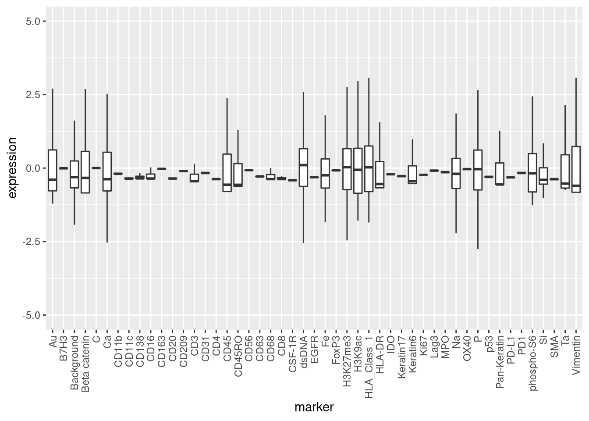
Looking at the boxplot for the expression per marker over all samples, ignoring outliers which are defined as points which includes all points outside of median ± 1.5 * IQR (interquantile range), we can again see the broad variability.
expr %>%
pivot_longer(cols = everything(), names_to = "marker", values_to = "expression") %>%
ggplot() +
geom_boxplot(aes(y=expression, x=marker), outlier.shape = NA) +
theme(axis.text.x = element_text(angle = 90, vjust = 0.5, hjust=1)) +
coord_cartesian(ylim = c(-5, 5))
Focusing on the measured proteins, the most highly expressed species (according to the mean) are:
tibble(marker = colnames(expr), mean.expression = colMeans(expr)) %>%
filter(!(marker %in% c("Ta", "Au", "P", "Si", "C", "Na", "Ca", "Fe",
"dsDNA", "Backgrond"))) %>%
slice_max(mean.expression, n=6)
# A tibble: 6 × 2
marker mean.expression
<chr> <dbl>
1 Keratin6 0.0298
2 CD138 0.0243
3 CD16 0.0238
4 p53 0.0213
5 EGFR 0.0205
6 CD63 0.0161Spatial Data
General
What is the scale?
1 Pixel corresponds to about 390 nm.
We will first look at the spatial data from all samples in one plot. The cell types are annotated according to the information the authors of the original study provided.
As pointed out in their publication, one can see that there is a continuum between mixing of immune cells (yellow) and cancer tissue (green and blue). Either we can see a clear interface between both populations or they are totally mixed. This is actually associated with the clinical outcome. Below this observation is quanitified by calculating a similar mixing score as they did in the original publication.
meta %>%
ggplot() +
geom_point(aes(x = row, y = col, col = Group), size = .1) +
facet_wrap(~ SampleID) +
guides(colour = guide_legend(override.aes = list(size = 4)))
Mixing Score
Calculating the mixing score by counting for all immune cells in each sample how many contacts to they have to cancer cells divided by the contacts to other immune cells. The contacts are determined by Delaunay Triangulation and cells are only considered to be neighbors if the distance between them is below 40.
Importantly this mixing score is higher if there are more tumor cells than immune cells (as seen by the filling color of the barplot below).
(Remark: The authors of the paper used Haralick’s gray-level co-occurrence matrix to determine direct neighbors of each cell)
# Setting the distance threshold for what is considered a neighbor in the DT.
neighbor.thr <- 40
if ("tumor.immune.contacts.RDS" %in% list.files("data")) {
contacts.smp <- readRDS("data/tumor.immune.contacts.RDS")
} else {
coord.type.smp <- unique(meta$SampleID) %>%
set_names(paste0("s", .)) %>%
map(function(id) {
meta %>%
filter(meta$SampleID == id) %>%
select(row, col, Group) %>%
mutate(Group = ifelse(Group == "Keratin-positive tumor",
"Tumor", Group)) %>%
filter(Group %in% c("Tumor", "Immune")) %>%
mutate(id = seq_len(nrow(.)))
})
# helper function for getting direct neighbors
get_neighbors <- function(ddobj, id) {
dplyr::union(
ddobj$delsgs$ind1[which(ddobj$delsgs$ind2 == id)],
ddobj$delsgs$ind2[which(ddobj$delsgs$ind1 == id)]
)
}
contacts.smp <- coord.type.smp %>%
set_names() %>%
map_dfr(function(smp) {
delaunay <- deldir::deldir(as.data.frame(smp %>% select(row, col)))
dists <- distances::distances(as.data.frame(smp %>% select(row, col)))
ids.to.map <- smp %>% filter(Group == "Immune") %>% pull(id)
map(ids.to.map, function(i) {
alln <- get_neighbors(delaunay, i)
actualn <- alln[which(dists[alln, i] <= neighbor.thr)]
smp %>%
filter(id %in% actualn) %>%
pull(Group)
}) %>%
unlist %>%
table
})
}
meta %>%
group_by(SampleID) %>%
count(Group) %>%
pivot_wider(names_from = Group, values_from=n, names_prefix = "Count.") %>%
cbind(contacts.smp) %>%
mutate(ratio.tumor.immune = as.vector(Tumor/Immune * 100)) %>%
rename("Count.Keratin.positive.Tumor" = "Count.Keratin-positive tumor") %>%
replace(is.na(.), 0) %>%
mutate(Count.Tumor.Total = Count.Keratin.positive.Tumor + Count.Tumor) %>%
mutate(ratio.count.tumor.immune = Count.Tumor.Total / Count.Immune) %>%
ggplot() +
geom_bar(aes(x=reorder(SampleID, -ratio.tumor.immune),
y=ratio.tumor.immune,
fill=ratio.count.tumor.immune),
stat="identity") +
theme(axis.text.x = element_text(angle = 90, hjust = 1)) +
labs(x = "Sample", y = "Mixing Score") +
scale_fill_viridis_c()
Looking at the samples with the top mixing score, namely 15, 18, 22, 24, 31, 25, 21, 26
meta %>%
filter(SampleID %in% c(15, 18, 22, 24, 31, 25, 21, 26)) %>%
ggplot() +
geom_point(aes(x = row, y = col, col = Group), size = .1) +
facet_wrap(~ SampleID, ncol = 4) +
guides(colour = guide_legend(override.aes = list(size = 4)))
Looking at the samples with the lowest mixing score, namely 35, 28, 16, 37, 4, 40, 41, 5.
meta %>%
filter(SampleID %in% c(35, 28, 16, 37, 4, 40, 41, 5)) %>%
ggplot() +
geom_point(aes(x = row, y = col, col = Group), size = .1) +
facet_wrap(~ SampleID, ncol = 4) +
guides(colour = guide_legend(override.aes = list(size = 4)))
And we can see that those mixing scores resemble exactly what we see in the images.
Sample 40
Looking more closely at sample 40 to make sure that the preprocessing went right. First, we will look at the cells only using their calculated center of mass.
meta %>%
filter(SampleID == 40) %>%
ggplot() +
geom_point(aes(x = row, y = col, col = Group), size=.4) +
guides(colour = guide_legend(override.aes = list(size = 2)))
And furthermore, we will look at the tiff to.
library(tiff)
id = 40
tiff <- readTIFF(paste0("data/raw_tiffs/p",
id, "_labeledcellData.tiff"), as.is = TRUE)First, the binary tiff, meaning all values that there not 0 or 1 (i.e. a cell was detected).
# get coordinates for where there was a cell detected (=: binary)
binary <- apply(tiff, c(1,2), function(n) !(n %in% c(0,1)))
binary.df <- as.data.frame(binary)
rownames(binary.df) <- seq_len(nrow(binary))
colnames(binary.df) <- seq_len(ncol(binary))
df <- binary.df %>%
rownames_to_column(var = "row") %>%
pivot_longer(cols = !(row), names_to = "col") %>%
mutate(row = as.numeric(row), col = as.numeric(col))
subs <- sample(nrow(df), .03 * nrow(df))
df %>%
slice(n = subs) %>%
mutate(cell.present = value) %>%
ggplot() +
geom_point(aes(x=row, y=col, col=cell.present), size=.1) +
theme(
axis.text.x = element_blank(),
axis.text.y = element_blank(),
axis.ticks = element_blank()) +
scale_colour_manual(values = c("TRUE" = "green2",
"FALSE" = "blue4")) +
guides(colour = guide_legend(override.aes = list(size = 2)))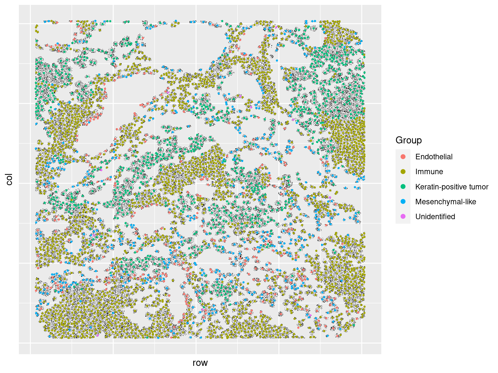
Second, we will visualize the tiff and the labeled center of mass together. And on this scale the result actually looks quite nice.
s.40 <- meta %>%
filter(SampleID == 40)
tiff.40 <- df %>%
filter(value) %>%
slice_sample(., n = nrow(.)/10)
ggplot() +
geom_point(data = tiff.40, aes(x=row, y=col), col="black",
size = 0.1, stroke = 0, shape = 16) +
geom_point(data = s.40, aes(x=row, y=col, col=Group), size = .5) +
theme(
axis.text.x = element_blank(),
axis.text.y = element_blank(),
axis.ticks = element_blank()) +
guides(colour = guide_legend(override.aes = list(size = 2)))
To qualitatively assess the performance of the segmentation we will furthermore look at a close up of sample 40, more specifically the region from row 0 to row 600 and from col 1448 to col 2048. And we can see that the center of mass (colored point) mostly matches the cell boundaries, but not always!
c.max <- dim(binary)[1]
top_left <- list(row = 0, col = c.max)
bottom_right <- list(row = 600, col = c.max-600)
# get the unique coordinates for each cell
tiff.df <- as.data.frame(tiff)
rownames(tiff.df) <- seq_len(nrow(tiff))
colnames(tiff.df) <- seq_len(ncol(tiff))
tiff.df.plot <- tiff.df %>%
rownames_to_column(var = "row") %>%
pivot_longer(cols = !(row), names_to = "col") %>%
mutate(row = as.numeric(row), col = as.numeric(col)) %>%
filter(!(value %in% c(0, 1))) %>%
# how to get only entry for each unique value
group_by(value) %>%
filter(row_number()==1) %>%
ungroup()
s.40 <- meta %>%
filter(SampleID == 40) %>%
filter(row >= top_left$row, row <= bottom_right$row,
col >= bottom_right$col, col <= top_left$col)
tiff.40 <- df %>%
filter(value) %>%
filter(row >= top_left$row, row <= bottom_right$row,
col >= bottom_right$col, col <= top_left$col)
labels.40 <- tiff.df.plot %>%
filter(row >= top_left$row, row <= bottom_right$row,
col >= bottom_right$col, col <= top_left$col)
ggplot() +
geom_point(data = tiff.40, aes(x=row, y=col), col="black",
size = 0.1, stroke = 0, shape = 16) +
geom_point(data = s.40, aes(x=row, y=col, col=Group), size = 3) +
theme(
axis.text.x = element_blank(),
axis.text.y = element_blank(),
axis.ticks = element_blank())
Here are the corresponding IDs for comparison to the meta data.
ggplot(labels.40) +
geom_label(aes(x = row, y = col, label = value), size = 2.5)
Merging Metadata
# Generating Sample Meta Data
immune.counts <- meta %>%
group_by(SampleID) %>%
count(Group) %>%
pivot_wider(names_from = Group, values_from = n,
names_prefix = "Count.")
total.counts <- meta %>%
count(SampleID) %>%
rename(Count.Total = n)
mixing.score <- round(
contacts.smp %>%
mutate(ratio.tumor.immune = Tumor/Immune * 100) %>%
pull(ratio.tumor.immune),
2)
sample.meta <- patient.info %>%
filter(SampleID != 30) %>%
mutate(ratio.tumor.immune = as.vector(mixing.score)) %>%
inner_join(immune.counts, by = "SampleID") %>%
inner_join(total.counts, by = "SampleID") %>%
# see paper Figure 3, Panel C
mutate(Classification =
case_when(Classification == 0 ~ "mixed",
Classification == 1 ~ "compartimentalized",
Classification == 2 ~ "cold")) %>%
mutate(SampleID = as.character(SampleID)) %>%
left_join(patient.info.paper, by = c("SampleID" = "InternalId"))
sample.meta %>% slice_head(n=6)
# A tibble: 6 × 38
SampleID Classification ratio.tumor.immune Count.Endothelial Count.Immune
<chr> <chr> <dbl> <int> <int>
1 1 mixed 42.5 35 2558
2 2 mixed 80.3 100 956
3 3 compartimentalized 11.2 112 3179
4 4 compartimentalized 4.81 132 4161
5 5 compartimentalized 9.08 196 2790
6 6 compartimentalized 15.5 110 2320
# … with 33 more variables: Count.Keratin-positive tumor <int>,
# Count.Mesenchymal-like <int>, Count.Tumor <int>, Count.Unidentified <int>,
# Count.Total <int>, DONOR_NO <dbl>, YEAR <dbl>, ANON_ID_ONCOSHARE <dbl>,
# AGE_AT_DX <dbl>, YEARDX <chr>, STAGE <chr>, SITE_02 <chr>, LATERAL <chr>,
# GRADE <chr>, TCODE_P <chr>, NCODE_P <chr>, MCODE_P <chr>, AJCC_P <chr>,
# ER <chr>, PR <chr>, HER2NEU <chr>, CS_TUM_SIZE <chr>, RESULT_GENE_1 <chr>,
# RESULT_MUTATION_1 <chr>, TEST_OFFERING_1 <chr>, RESULT_GENE_2 <chr>, …Running MISTy
Preparation
Select only proteins from the expression matrix and check for NAs.
Also we need to check the variance for each marker in each same and exclude the marker if the variance is 0. The same is true for markers whose number of unique values is lower than the desired number of cv folds (here 10).
cv.folds = 10
expr.smp <- unique(meta$SampleID) %>%
set_names(paste0("s", .)) %>%
map(function(id) {
ret.expr <- expr %>%
filter(meta$SampleID == id) %>%
# Select only proteins
select(11:47)
# Check for zero variance (otherwise MISTy throws an error)
target.var <- apply(ret.expr, 2, stats::sd, na.rm = TRUE)
ret.expr <- ret.expr %>% select(-names(which(target.var == 0)))
# Check for how many unique values
target.unique <- colnames(ret.expr) %>%
purrr::set_names() %>%
purrr::map_int(~ length(unique(ret.expr %>% pull(.x))))
ret.expr <- ret.expr %>% select(
names(target.unique[target.unique > cv.folds])
)
colnames(ret.expr) <- make.names(colnames(ret.expr))
ret.expr
})
# Check NAs for sample 40
sum(map_int(names(expr.smp$s40), ~ sum(is.na(expr.smp$s40[.x]))))
[1] 0
coord.smp <- unique(meta$SampleID) %>%
set_names(paste0("s", .)) %>%
map(function(id) {
meta %>%
filter(meta$SampleID == id) %>%
select(row, col)
})
# Check NAs for sample 40
sum(map_int(names(coord.smp$s40), ~ sum(is.na(coord.smp$s40[.x]))))
[1] 0
nrow(expr.smp$s40) == nrow(coord.smp$s40)
[1] TRUEHelper function to calculate distances to the neighbors.
# helper function for nearest neighbors
dist_k_nn <- function(sample, k) {
nn <- RANN::nn2(sample, eps=0.0, k = k)
map_dbl(seq_len(nrow(sample)), function(n) {
mean(nn$nn.dists[n, ])
})
}
# helper function for getting direct neighbors
get_neighbors <- function(ddobj, id) {
dplyr::union(
ddobj$delsgs$ind1[which(ddobj$delsgs$ind2 == id)],
ddobj$delsgs$ind2[which(ddobj$delsgs$ind1 == id)]
)
}First we will look at the distribution of the mean distances to the direct neighbors (as determined by the delauney triangulation) to get a feeling for which cutoff value should be used for the generation of the juxtaview.
# mean distance to the direct neighbors for each cell
mean.dists.direct.neighbors <- map(coord.smp, function(smp) {
delaunay <- deldir::deldir(as.data.frame(smp))
dists <- distances::distances(as.data.frame(smp))
map_dbl(seq_len(nrow(smp)), function(id) {
nn <- get_neighbors(delaunay, id)
mean(dists[nn, id])
})
}) %>% unlist
# histogram
ggplot(data.frame(dist = mean.dists.direct.neighbors)) +
geom_histogram(aes(dist), bins = 100) +
lims(x = c(0,100)) +
geom_vline(xintercept = 40, col = "blue")
Warning: Removed 1331 rows containing non-finite values (stat_bin).
Warning: Removed 2 rows containing missing values (geom_bar).
Summary statistics:
data.frame(value = mean.dists.direct.neighbors) %>%
summarise(mean = mean(value),
median = median(value),
q25 = quantile(value, 0.25),
q75 = quantile(value, 0.75),
min = min(value),
max = max(value)) %>%
knitr::kable(digits = 2)| mean | median | q25 | q75 | min | max |
|---|---|---|---|---|---|
| 31.33 | 28.38 | 23.38 | 35.04 | 10.14 | 586.15 |
Furthermore we will look at the distribution of the mean distances to the 10 clostest, 20 closest, 40 clostest, or 80 clostest cells to get a feeling for which cutoff will be used to generate the paraview.
neighbor.dists <- map_dfr(coord.smp, function(smp) {
c(10, 20, 40, 80) %>%
set_names() %>%
map_dfc(function(k) {
dist_k_nn(smp, k)
}) %>%
set_names(paste0("dist_to_", c("10", "20", "40", "80")))
})
neighbor.dists %>%
pivot_longer(cols = everything()) %>%
mutate(name = factor(name,
levels = paste0("dist_to_", c("10", "20", "40", "80")))) %>%
ggplot() +
geom_histogram(aes(value), bins = 100) +
facet_wrap(~ name) +
lims(x = c(0, 200)) +
geom_vline(xintercept = 120, col = "blue")
Warning: Removed 490 rows containing non-finite values (stat_bin).
Warning: Removed 8 rows containing missing values (geom_bar).
Summary statistics:
neighbor.dists %>%
pivot_longer(cols = everything()) %>%
group_by(name) %>%
summarise(mean = mean(value),
median = median(value),
q25 = quantile(value, 0.25),
q75 = quantile(value, 0.75),
min = min(value),
max = max(value)) %>%
knitr::kable(digits = 2)| name | mean | median | q25 | q75 | min | max |
|---|---|---|---|---|---|---|
| dist_to_10 | 30.51 | 29.28 | 25.16 | 34.38 | 14.39 | 197.30 |
| dist_to_20 | 45.04 | 43.33 | 37.63 | 50.52 | 23.57 | 252.05 |
| dist_to_40 | 65.48 | 62.97 | 55.22 | 73.23 | 36.71 | 358.27 |
| dist_to_80 | 94.68 | 90.92 | 80.19 | 105.64 | 54.37 | 506.39 |
Generating the MISTy views
Based on the data above, I am going to use a neighbor threshold of 40 for the juxtaview and a cutoff of 120 for the paraview (plus the zone of indifference which will conclusively be 40).
if ("misty_views_smp.RDS" %in% list.files("data")) {
misty.views.smp <- readRDS("data/misty_views_smp.RDS")
} else {
misty.views.smp <- map(expr.smp, coord.smp, function(expr, coord) {
# Create views and run MISTy
create_initial_view(expr) %>%
add_juxtaview(positions = coord, neighbor.thr = 40) %>%
add_paraview(positions = coord, l = 120, zoi = 40)
})
names(misty.views.smp) <- names(expr.smp)
saveRDS(misty.views.smp, "data/misty_views_smp.RDS")
}Random Forest Implementation
Running with RF as ML algorithm to build the view-specific models.
if ("ranger.results.RDS" %in% list.files("data")) {
ranger.results <- readRDS("data/ranger.results.RDS")
} else {
cv.folds = 10
ranger.results.folders <- map2(
misty.views.smp, names(misty.views.smp), function(smp, name) {
smp %>% run_misty(results.folder = paste0("analysis/results/ranger_", name),
cv.folds = cv.folds)
})
ranger.results <- collect_results(ranger.results.folders)
saveRDS(ranger.results, "data/ranger.results.RDS")
}MISTy Results
Gain R2
We can see that there is quite some gain in variance when taking the expression of neighboring cells into account. However, looking at the errorbars we can also see that there is a large variability between the samples.
mistyR::plot_improvement_stats(ranger.results)
How is the gain.R2 dependend on the sample and the target. How could I decompose those effects?
Let’s look at a heatmap first, visualizing the gain.R2 for each sample and target.
ranger.results$improvements %>%
filter(measure == "gain.R2") %>%
mutate(sample = str_extract(sample, "(?<=_s)[0-9]+")) %>%
select(-measure) %>%
pivot_wider(names_from = target) %>%
replace(is.na(.), 0) %>%
as.data.frame() %>%
column_to_rownames(var = "sample") %>%
as.matrix() %>%
pheatmap::pheatmap()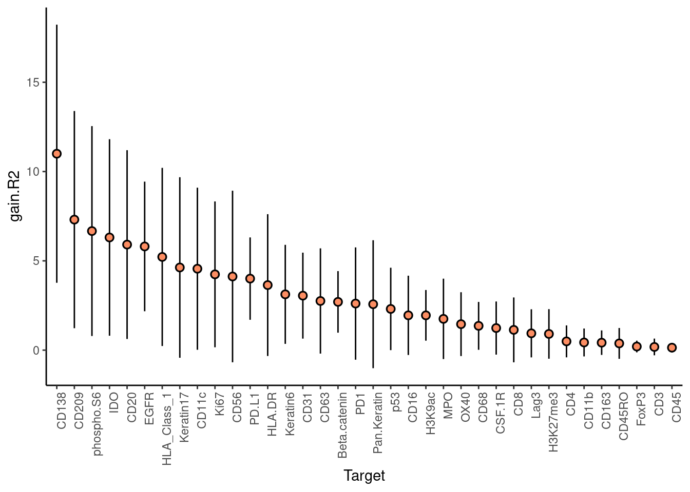
Let’s classify the samples based on the hierachical clustering of the “gain.R2” signature as shown in the heatmap.
We will take 10 clusters but remove all clusters that have only one sample in them.
k = 10
hc <- ranger.results$improvements %>%
filter(measure == "gain.R2") %>%
mutate(sample = str_extract(sample, "(?<=_s)[0-9]+")) %>%
select(-measure) %>%
pivot_wider(names_from = target) %>%
replace(is.na(.), 0) %>%
as.data.frame() %>%
column_to_rownames(var = "sample") %>%
as.matrix() %>%
dist() %>%
hclust()
plot(hc)
rect.hclust(hc , k = k, border = 2:6)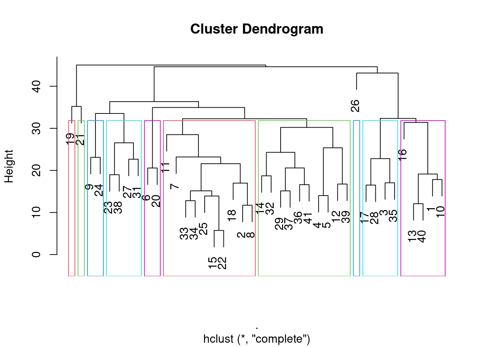
Removing clusters with only 1 sample in them.
hc.clusters <- cutree(hc, k = k)
n <- unique(hc.clusters) %>%
set_names() %>%
map_int(function(i) {
s <- sum(hc.clusters == i)
})
keep <- names(n)[which(n > 1)]
n
1 2 3 4 5 6 7 8 9 10
5 10 4 10 2 2 1 1 4 1 Now visualize the heatmap again with the clusters.
col.annotation <- data.frame(cluster = factor(hc.clusters))
rownames(col.annotation) <- names(hc.clusters)
ranger.results$improvements %>%
filter(measure == "gain.R2") %>%
mutate(sample = str_extract(sample, "(?<=_s)[0-9]+")) %>%
left_join(tibble(sample = names(hc.clusters), cluster = hc.clusters),
by = "sample") %>%
filter(cluster %in% keep) %>%
select(-c(measure, cluster)) %>%
pivot_wider(names_from = target) %>%
replace(is.na(.), 0) %>%
as.data.frame() %>%
column_to_rownames(var = "sample") %>%
as.matrix() %>%
pheatmap::pheatmap(., annotation_row = col.annotation)
Now what differentiates the clusters?
We could for example look at: - ratio.tumor.immune - Count.Immune - Count.Tumor, - Count.Endothelial - Count.Mesenchymal.like - Count.Total
One can immediately see that cluster 2 has a higher ration of tumor-immune to immune-immune contact, though this effect seems to be mainly driven by the cold tumors (low number of immune cells).
sample.meta %>%
left_join(tibble(sample = names(hc.clusters), cluster = factor(hc.clusters)),
by = c("SampleID" = "sample")) %>%
filter(cluster %in% keep) %>%
rename("Count.Keratin.positive.Tumor" = "Count.Keratin-positive tumor",
"Count.Mesenchymal.like" = "Count.Mesenchymal-like") %>%
mutate(Count.Tumor = Count.Tumor + Count.Keratin.positive.Tumor) %>%
pivot_longer(cols = c(ratio.tumor.immune, Count.Immune, Count.Tumor,
Count.Endothelial, Count.Mesenchymal.like, Count.Total),
names_to = "statistic", values_to = "value") %>%
ggplot() +
geom_boxplot(aes(x = cluster, y = value), outlier.shape=NA) +
geom_jitter(aes(x = cluster, y = value, col = Classification), size=.8, width=.3) +
facet_wrap(~ statistic, scales = "free", ncol = 3) +
theme(legend.position="top") +
scale_color_manual(values = c("mixed" = "indianred",
"compartimentalized" = "forestgreen",
"cold" = "royalblue"))
Warning: Removed 4 rows containing non-finite values (stat_boxplot).
Warning: Removed 4 rows containing missing values (geom_point).
Though it may be more informative to actually look at the cell ratios, or proportions.
Now we may like to investigate the proportion of the classification in more detail across the clusters.
p1 <- sample.meta %>%
left_join(tibble(sample = names(hc.clusters), cluster = factor(hc.clusters)),
by = c("SampleID" = "sample")) %>%
filter(cluster %in% keep) %>%
rename("Count.Keratin.positive.Tumor" = "Count.Keratin-positive tumor",
"Count.Mesenchymal.like" = "Count.Mesenchymal-like") %>%
mutate(Count.Tumor = Count.Tumor + Count.Keratin.positive.Tumor) %>%
group_by(cluster) %>%
summarise(n = n(),
n.mixed = sum(Classification == "mixed"),
n.comp = sum(Classification == "compartimentalized"),
n.cold = sum(Classification == "cold")) %>%
mutate(fraction.mixed = n.mixed/n,
fraction.comp = n.comp/n,
fraction.cold = n.cold/n) %>%
pivot_longer(cols = starts_with("frac")) %>%
ggplot() +
geom_col(aes(x = cluster, y = value, fill = name)) +
geom_text(aes(x = cluster, y = 0.99, label = n), vjust = -0.5) +
scale_fill_manual(values = c("fraction.mixed" = "indianred",
"fraction.comp" = "forestgreen",
"fraction.cold" = "royalblue")) +
labs(title = "Fractions")
p2 <- sample.meta %>%
left_join(tibble(sample = names(hc.clusters), cluster = factor(hc.clusters)),
by = c("SampleID" = "sample")) %>%
filter(cluster %in% keep) %>%
rename("Count.Keratin.positive.Tumor" = "Count.Keratin-positive tumor",
"Count.Mesenchymal.like" = "Count.Mesenchymal-like") %>%
mutate(Count.Tumor = Count.Tumor + Count.Keratin.positive.Tumor) %>%
group_by(cluster) %>%
summarise(n = n(),
n.mixed = sum(Classification == "mixed"),
n.comp = sum(Classification == "compartimentalized"),
n.cold = sum(Classification == "cold")) %>%
pivot_longer(cols = starts_with("n.")) %>%
ggplot() +
geom_col(aes(x = cluster, y = value, fill = name)) +
scale_fill_manual(values = c("n.mixed" = "indianred",
"n.comp" = "forestgreen",
"n.cold" = "royalblue")) +
labs(title = "Absolute Numbers")
gridExtra::grid.arrange(p1, p2, ncol = 2)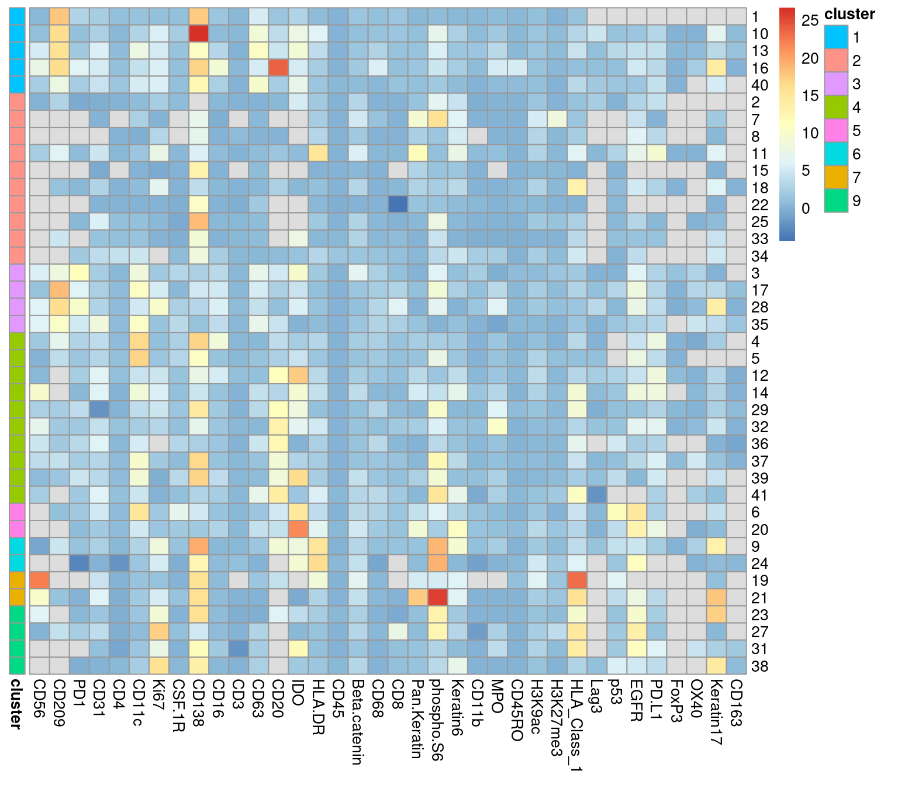
Now could it be that the the intraview R2 could somehow explain the clustering we see in the gain.R2. Meaning samples in which the intraview R2s are rather low and samples in which it is rather high?
First, we one can note that for the targets there seem to be three distinct clusters. On the left the intra R2 is rather high, in the middle the intra R2 is rather low, and on the right the intra R2 values are mixed across the samples.
Regarding the question, the clusters seem to be somewhat preserved, so the intraview R2 probably has something to do with the observed clusterin in gain R2 (the intraview basically determines the potential of gaining explained variance).
ranger.results$improvements %>%
filter(measure == "intra.R2") %>%
mutate(sample = str_extract(sample, "(?<=_s)[0-9]+")) %>%
left_join(tibble(sample = names(hc.clusters), cluster = hc.clusters),
by = "sample") %>%
filter(cluster %in% keep) %>%
select(-c(measure, cluster)) %>%
pivot_wider(names_from = target) %>%
replace(is.na(.), 0) %>%
as.data.frame() %>%
column_to_rownames(var = "sample") %>%
as.matrix() %>%
pheatmap::pheatmap(., annotation_row = col.annotation)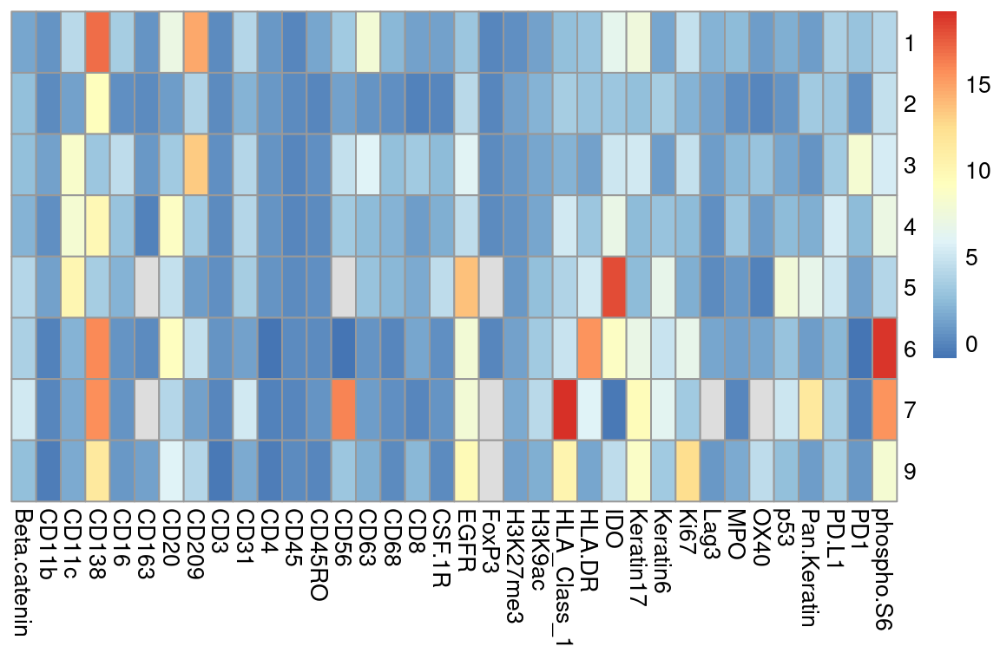
How does the multiview R2 heatmap look like?
Regarding the sample clusters one can see quite clearly that the clusters from the gain.R2 statistic are not fully preserved. For a given sample the neighboring samples often belong to the same cluster, but the clusters seem to be broken into several smaller subsets (e.g. look at clusters 2 and 4).
ranger.results$improvements %>%
filter(measure == "multi.R2") %>%
mutate(sample = str_extract(sample, "(?<=_s)[0-9]+")) %>%
left_join(tibble(sample = names(hc.clusters), cluster = hc.clusters),
by = "sample") %>%
filter(cluster %in% keep) %>%
select(-c(measure, cluster)) %>%
pivot_wider(names_from = target) %>%
replace(is.na(.), 0) %>%
as.data.frame() %>%
column_to_rownames(var = "sample") %>%
as.matrix() %>%
pheatmap::pheatmap(., annotation_row = col.annotation)
Another way to go about this investigation may be to select the top targets in terms of gain R2 and then check what this gain R2 is correlated with The details can be found below.
Click Here
Let’s take the 12 targets (1/3 of all targets) for which the mean gain.R2 is the largest and investigate the differences between the samples.
top.targets <- ranger.results$improvements %>%
filter(measure == "gain.R2") %>%
group_by(target) %>%
summarise(mean.gain.R2 = mean(value), .groups = "drop") %>%
slice_max(mean.gain.R2, n=12) %>%
pull(target)
top.targets
[1] "CD138" "CD209" "phospho.S6" "IDO" "CD20"
[6] "EGFR" "HLA_Class_1" "Keratin17" "CD11c" "Ki67"
[11] "CD56" "PD.L1" How should the summarise the gained explained variance per sample? Sum it up, take the mean, median?
plots <- map2(c(mean, median, sum), c("Mean", "Median", "Sum"), function(func, name) {
ranger.results$improvements %>%
filter(measure == "gain.R2") %>%
filter(target %in% top.targets) %>%
mutate(sample = str_extract(sample, "(?<=_s)[0-9]+")) %>%
group_by(sample) %>%
summarise(stat = func(value), .groups = "keep") %>%
ggplot() +
geom_bar(aes(x = reorder(sample, -stat), y = stat),
stat = "identity") +
labs(title = name)
})
do.call(gridExtra::grid.arrange, c(plots, ncol=1))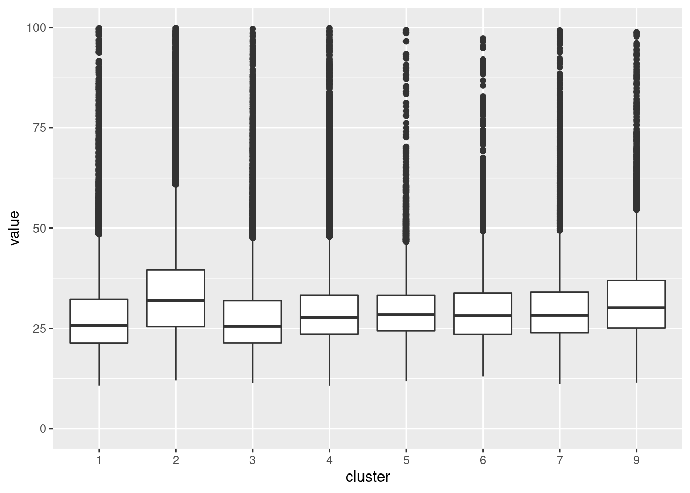
To know which statistic might be useful, we should figure out how our gain.R2 stat for each sample is dependent on the targets.
ordering <- ranger.results$improvements %>%
filter(measure == "gain.R2") %>%
mutate(sample = str_extract(sample, "(?<=_s)[0-9]+")) %>%
group_by(sample) %>%
summarise(m = median(value)) %>%
arrange(desc(m)) %>%
pull(sample)
ranger.results$improvements %>%
filter(measure == "gain.R2") %>%
filter(target %in% top.targets) %>%
mutate(sample = str_extract(sample, "(?<=_s)[0-9]+")) %>%
mutate(sample = factor(sample, levels = ordering)) %>%
ggplot() +
geom_boxplot(aes(x = sample, y = value))
Let’s look at some correlation between other sample features and the gained explained variance (R2).
Quantiative Predictors: - Mixing score - Count of immune cells - Count of tumor cells - Count of endothelial cells - Count of mesenchymal-like cells - Total cell count
plots <- map(c("ratio.tumor.immune", "Count.Immune", "Count.Tumor",
"Count.Endothelial", "Count.Mesenchymal.like", "Count.Total"),
function(test.var) {
ranger.results$improvements %>%
filter(measure == "gain.R2") %>%
filter(target %in% top.targets) %>%
mutate(sample = str_extract(sample, "(?<=_s)[0-9]+")) %>%
group_by(sample) %>%
summarise(sum.gain.R2 = sum(value), mean.gain.R2 = mean(value),
median.gain.R2 = median(value), .groups = "drop") %>%
left_join(sample.meta %>%
rename("Count.Keratin.positive.Tumor" = "Count.Keratin-positive tumor",
"Count.Mesenchymal.like" = "Count.Mesenchymal-like") %>%
mutate(Count.Tumor = Count.Tumor + Count.Keratin.positive.Tumor),
by = c("sample" = "SampleID")) %>%
pivot_longer(cols = c(sum.gain.R2, mean.gain.R2, median.gain.R2),
names_to = "stat") %>%
mutate(stat = factor(stat, levels = c("mean.gain.R2", "sum.gain.R2", "median.gain.R2"))) %>%
ggplot() +
geom_point(aes(x = !!sym(test.var), y = value)) +
geom_smooth(aes(x = !!sym(test.var), y = value),
formula = y ~ x, method = "lm") +
facet_wrap(~ stat, ncol=3, scales="free_y") +
labs(title = test.var)
})
do.call(gridExtra::grid.arrange, c(plots, ncol=1))
Warning: Removed 12 rows containing non-finite values (stat_smooth).
Warning: Removed 12 rows containing missing values (geom_point).
Correlation Plot:
walk(c("sum.gain.R2", "mean.gain.R2", "median.gain.R2"), function(test.var) {
ranger.results$improvements %>%
filter(measure == "gain.R2") %>%
filter(target %in% top.targets) %>%
mutate(sample = str_extract(sample, "(?<=_s)[0-9]+")) %>%
group_by(sample) %>%
summarise(sum.gain.R2 = sum(value), mean.gain.R2 = mean(value),
median.gain.R2 = median(value), .groups = "drop") %>%
left_join(sample.meta %>%
rename("Count.Keratin.positive.Tumor" = "Count.Keratin-positive tumor",
"Count.Mesenchymal.like" = "Count.Mesenchymal-like") %>%
select(1:10) %>%
replace(is.na(.), 0) %>%
mutate(Count.Tumor = Count.Tumor + Count.Keratin.positive.Tumor),
by = c("sample" = "SampleID")) %>%
select(!!sym(test.var), ratio.tumor.immune,
Count.Immune, Count.Tumor, Count.Endothelial, Count.Mesenchymal.like,
Count.Total) %>%
cor() %>%
corrplot::corrplot(type = "upper", tl.col = "black")
})


Qualitative Predictors
- Grade of the tumor (appearance of cancer tissue)
- Stage of the tumor (size of primary tumor, metastasis)
Now taking the top 10 and the bottom 10 samples and comparing their features. Features being the mixing score, the R2 of the intraview for the chosen targets
top.10 <- ranger.results$improvements %>%
filter(measure == "gain.R2") %>%
filter(target %in% top.targets) %>%
mutate(sample = str_extract(sample, "(?<=_s)[0-9]+")) %>%
group_by(sample) %>%
summarise(mean.gain.R2 = sum(value), .groups = "drop") %>%
slice_max(mean.gain.R2, n = 10) %>%
pull(sample)
bottom.10 <- ranger.results$improvements %>%
filter(measure == "gain.R2") %>%
filter(target %in% top.targets) %>%
mutate(sample = str_extract(sample, "(?<=_s)[0-9]+")) %>%
group_by(sample) %>%
summarise(mean.gain.R2 = sum(value), .groups = "drop") %>%
slice_min(mean.gain.R2, n = 10) %>%
pull(sample)Looking at the mixing score (ratio of immune-tumor contacts divided by the number of immune-immune contacts). And we can kinda see that the
sample.meta %>%
mutate(group.tmp = case_when(
SampleID %in% top.10 ~ "top",
SampleID %in% bottom.10 ~ "bottom",
TRUE ~ "middle",
)) %>%
mutate(group.tmp = factor(group.tmp, levels = c("top", "middle", "bottom"))) %>%
ggplot() +
geom_boxplot(aes(x=group.tmp, y=ratio.tumor.immune))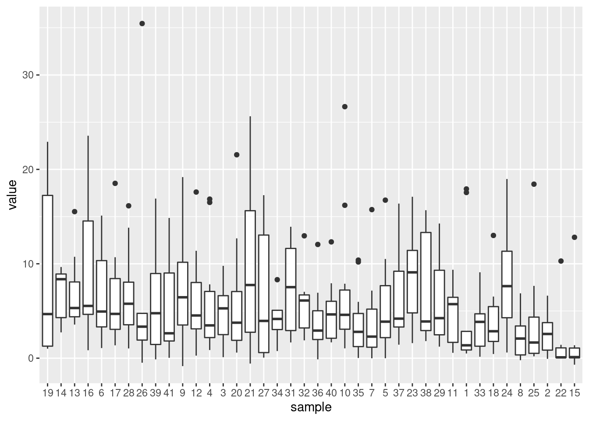
| Version | Author | Date |
|---|---|---|
| 8cb127d | schae211 | 2021-10-21 |
View Contributions
mistyR::plot_view_contributions(ranger.results)
Also looking at the variability.
ranger.results$contributions %>%
filter(!str_starts(view, "p\\."), view != "intercept") %>%
ggplot() +
geom_boxplot(aes(x = target, y = value)) +
theme(axis.text.x = element_text(angle = 90, hjust = 1)) +
facet_wrap(~ view, ncol = 1)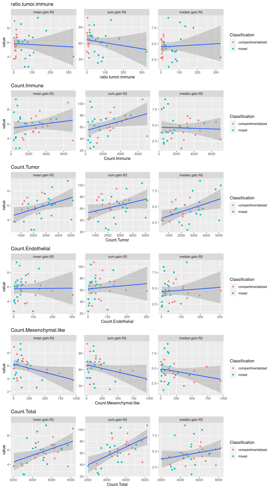
Importances
mistyR::plot_interaction_heatmap(ranger.results, view = "intra", clean = TRUE)
mistyR::plot_interaction_heatmap(ranger.results, view = "juxta.40", clean = TRUE)mistyR::plot_interaction_heatmap(ranger.results, view = "para.120", clean = TRUE)Signatures
Performance
ranger.perf.sig <- mistyR::extract_signature(ranger.results, "performance")
ranger.perf.pca <- stats::prcomp(ranger.perf.sig %>% select(-sample))Color by Grade.
ggplot() +
geom_point(aes(x=ranger.perf.pca$x[,1], y=ranger.perf.pca$x[,2],
col=factor(sample.meta$GRADE)))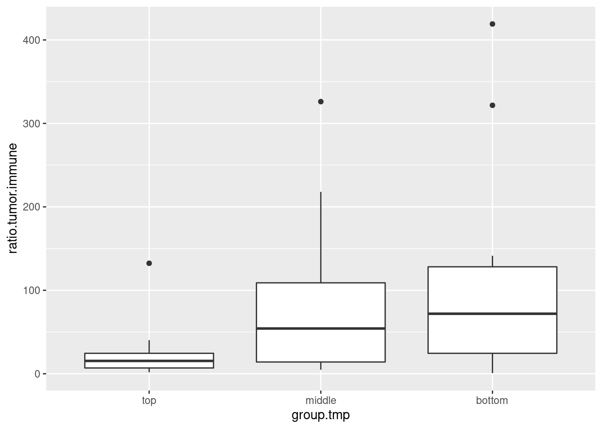
| Version | Author | Date |
|---|---|---|
| 8cb127d | schae211 | 2021-10-21 |
Color by Classification.
ggplot() +
geom_point(aes(x=ranger.perf.pca$x[,1], y=ranger.perf.pca$x[,2],
col=factor(sample.meta$Classification)))
| Version | Author | Date |
|---|---|---|
| 8cb127d | schae211 | 2021-10-21 |
Color by the log of the tumor.immune ration (see calculation above). This is basically a measurement of the mixing score (number of immune-tumor interactions divided by the number of immune-immune interactions).
ggplot() +
geom_point(aes(x=ranger.perf.pca$x[,1],
y=ranger.perf.pca$x[,2],
col=log10(sample.meta$ratio.tumor.immune))) +
scale_color_viridis_c()
Color by total counts.
ggplot() +
geom_point(aes(x=ranger.perf.pca$x[,1],
y=ranger.perf.pca$x[,2],
col=sample.meta$Count.Total)) +
scale_color_viridis_c()
| Version | Author | Date |
|---|---|---|
| 8cb127d | schae211 | 2021-10-21 |
Which factors drive the variance in the results?
fviz_pca_var(ranger.perf.pca, col.var="contrib",
gradient.cols = c("#00AFBB", "#E7B800", "#FC4E07"),
repel = TRUE)
Warning: ggrepel: 33 unlabeled data points (too many overlaps). Consider
increasing max.overlaps
| Version | Author | Date |
|---|---|---|
| 8cb127d | schae211 | 2021-10-21 |
Importance
ranger.imp.sig <- mistyR::extract_signature(ranger.results, "importance")
ranger.imp.pca <- stats::prcomp(ranger.imp.sig %>% select(-sample))Color by Grade.
ggplot() +
geom_point(aes(x=ranger.imp.pca$x[,1], y=ranger.imp.pca$x[,2],
col=factor(sample.meta$GRADE)))Color by Classification.
ggplot() +
geom_point(aes(x=ranger.imp.pca$x[,1], y=ranger.imp.pca$x[,2],
col=factor(sample.meta$Classification)))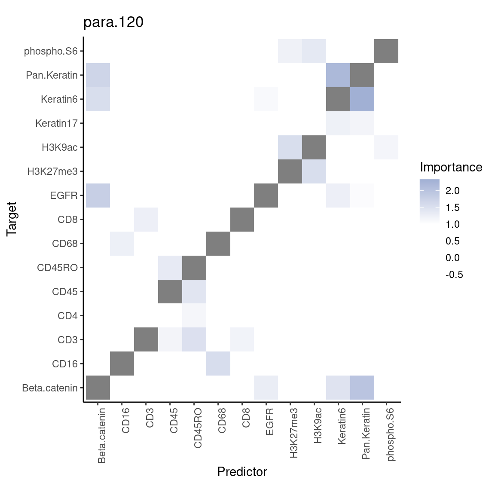
Looking at the variable loadings one can see that the importances are often similar for different views and that the importances are reciprocal, e.g. - CD45 & HLA_Class_1 (= MHC1) - CD63 & CD68 (macrophages) - CD16 & CD11c (natural killer cells, neutrophils, monocytes, and macrophages) - CD16 & CD45
fviz_pca_var(ranger.imp.pca, col.var="contrib",
gradient.cols = c("#00AFBB", "#E7B800", "#FC4E07"),
repel = TRUE)
Warning: ggrepel: 528 unlabeled data points (too many overlaps). Consider
increasing max.overlapsSave data
saveRDS(expr, "data/expression.RDS")
saveRDS(expr.smp, "data/expression_per_sample.RDS")
saveRDS(meta, "data/meta_data.RDS")
saveRDS(sample.meta, "data/sample_meta.RDS")
sessionInfo()
R version 4.1.1 (2021-08-10)
Platform: x86_64-pc-linux-gnu (64-bit)
Running under: Ubuntu 20.04.3 LTS
Matrix products: default
BLAS: /usr/lib/x86_64-linux-gnu/blas/libblas.so.3.9.0
LAPACK: /usr/lib/x86_64-linux-gnu/lapack/liblapack.so.3.9.0
locale:
[1] LC_CTYPE=en_US.UTF-8 LC_NUMERIC=C
[3] LC_TIME=en_US.UTF-8 LC_COLLATE=en_US.UTF-8
[5] LC_MONETARY=en_US.UTF-8 LC_MESSAGES=en_US.UTF-8
[7] LC_PAPER=en_US.UTF-8 LC_NAME=C
[9] LC_ADDRESS=C LC_TELEPHONE=C
[11] LC_MEASUREMENT=en_US.UTF-8 LC_IDENTIFICATION=C
attached base packages:
[1] stats graphics grDevices utils datasets methods base
other attached packages:
[1] tiff_0.1-8 factoextra_1.0.7 forcats_0.5.1 stringr_1.4.0
[5] dplyr_1.0.7 purrr_0.3.4 readr_2.0.2 tidyr_1.1.4
[9] tibble_3.1.5 ggplot2_3.3.5 tidyverse_1.3.1 future_1.22.1
[13] mistyR_1.1.10 workflowr_1.6.2
loaded via a namespace (and not attached):
[1] nlme_3.1-152 fs_1.5.0 lubridate_1.8.0 bit64_4.0.5
[5] RColorBrewer_1.1-2 httr_1.4.2 rprojroot_2.0.2 tools_4.1.1
[9] backports_1.2.1 bslib_0.3.1 utf8_1.2.2 R6_2.5.1
[13] mgcv_1.8-38 DBI_1.1.1 colorspace_2.0-2 withr_2.4.2
[17] gridExtra_2.3 tidyselect_1.1.1 curl_4.3.2 bit_4.0.4
[21] compiler_4.1.1 git2r_0.28.0 cli_3.0.1 rvest_1.0.1
[25] xml2_1.3.2 labeling_0.4.2 sass_0.4.0 scales_1.1.1
[29] distances_0.1.8 digest_0.6.28 foreign_0.8-81 rmarkdown_2.11
[33] rio_0.5.27 pkgconfig_2.0.3 htmltools_0.5.2 parallelly_1.28.1
[37] dbplyr_2.1.1 fastmap_1.1.0 highr_0.9 rlang_0.4.11
[41] readxl_1.3.1 rstudioapi_0.13 jquerylib_0.1.4 generics_0.1.0
[45] farver_2.1.0 jsonlite_1.7.2 vroom_1.5.5 zip_2.2.0
[49] car_3.0-11 magrittr_2.0.1 Matrix_1.3-4 Rcpp_1.0.7
[53] munsell_0.5.0 fansi_0.5.0 abind_1.4-5 lifecycle_1.0.1
[57] stringi_1.7.5 whisker_0.4 yaml_2.2.1 carData_3.0-4
[61] grid_4.1.1 parallel_4.1.1 listenv_0.8.0 promises_1.2.0.1
[65] ggrepel_0.9.1 crayon_1.4.1 lattice_0.20-45 deldir_1.0-5
[69] splines_4.1.1 haven_2.4.3 hms_1.1.1 knitr_1.36
[73] pillar_1.6.3 ggpubr_0.4.0 ggsignif_0.6.3 codetools_0.2-18
[77] reprex_2.0.1 glue_1.4.2 evaluate_0.14 data.table_1.14.2
[81] modelr_0.1.8 vctrs_0.3.8 tzdb_0.1.2 httpuv_1.6.3
[85] cellranger_1.1.0 RANN_2.6.1 gtable_0.3.0 assertthat_0.2.1
[89] openxlsx_4.2.4 xfun_0.26 broom_0.7.9 rstatix_0.7.0
[93] later_1.3.0 viridisLite_0.4.0 pheatmap_1.0.12 corrplot_0.90
[97] globals_0.14.0 ellipsis_0.3.2